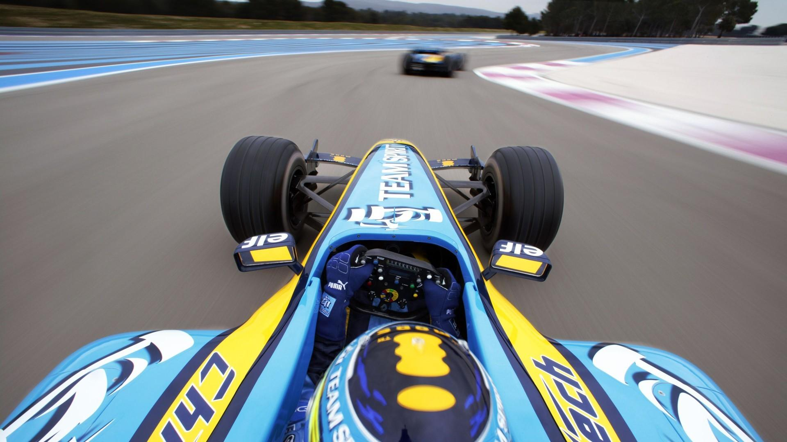

Circuito de Barcelona-Catalunya

El Circuito de Barcelona-Catalunya está situado en Montmeló, Barcelona. Es uno de los circuitos más conocidos del automovilismo.
Características del circuito
- Longitud aproximada: 4,657 km.
- Varias zonas de alta velocidad.
- Curvas técnicas y rápidas.
- Rectas que permiten adelantamientos.
Datos principales
| Característica | Información |
|---|---|
| Ubicación | Montmeló, Barcelona |
| Longitud | 4,657 km |
| Tipo | Circuito permanente |
Más información
Puedes consultar información adicional sobre el circuito en la página oficial.
Circuit de Barcelona-Catalunya